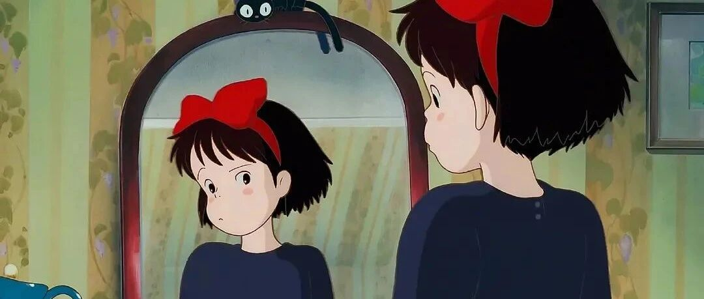

退休之后，发生了好多幸运的事
点击关注 秋秋很开心

大家好，我是秋秋～
决心要Fire、退休、不为钱而生活，也就是上个月的事。虽然我已经为此准备了好几年，但真正退休之后.......
我发现，我越来越幸运了？！！！

1、恰饭没有改变
除了被动的利息来源，我的几个账号依旧在为我提供收入。
比如公众号，因为之前就有快10万粉丝，所以有阅读量正常更新，就会有一些合作。
而写作之于我，又没那么困难。
好像因为这个平台，我才能分享我的故事，才能找到更多有共鸣的人。
这区别于之前，我可以有感悟写没感悟不写，心里是非常舒畅的。
而如果保持这份内心舒畅的同时，还有赚钱的机会，我觉得那便是一种幸运。
2、写了豆瓣热贴，100粉丝

因为退休，我开始记录这一时期的变化，也愿意分享大家。
毕竟，我真真实实是从焦虑的时间走过来的。
在0粉丝的情况下，第一个帖子有几百赞，还被Fire小组（穷版）加精华。

这让我很开心。
因为能把自己每个阶段、不同的状态记录下来，又被看到，就很幸运。
3、被也大采访
也大是我关注了好久的一个公众号——「也谈钱」的作者。
他20多岁就决定，在30岁的时候和太太一起攒够500万，靠10%的年化收益退休。
是他，是《不上班，也有钱》的作者曾婉玲，是我看的《小狗钱钱》《穷爸爸富爸爸》《纳瓦尔宝典》.......
是参加各种Fire（穷版）生活小组，让我定下了自己的退休计划。
所以被激励自己的人看到采访，就很幸运了。
4、和欣赏的人成为朋友

如果金钱是一种财富，那么健康、良好的人际关系更是。
能和欣赏的人成为朋友，无疑是幸运事一件了！
所以fire之后我还在保持分享，一是我喜欢这种记录。
二是分享出来，就能像微光吸引微光，借此，找到更多同行路上的小伙伴。
5、看到我身上新的闪光点
在fire的过程中，心态平和、对未来的自信、应对大把独处的时光而不无聊，这是非常需要智慧的。
以前，我也会羡慕提前退休的人——他们手里的钱。
现在才明白，从选择、到准备、到坚定有底气得分享出来，这些都是闪闪发光的点。
也许存钱之路固然可贵，但我现在更喜欢自己对未来的态度和能享受独处的特质。
6、参加小动物保护协会
很多我想做的，之前没去尝试。
Fire之后，因为原来就喜欢摄影也有设备，直接参加了小动物保护组织，去当摄影。
这个我还是很兴奋和幸运的！之后继续和大家分享。
7、和男朋友关系更好了
我俩认识十几年，他程序员也很忙，确实也因为家庭琐事烦恼过。
现在更多的，我心态平和、每天很开心，给他带来很多情绪鼓励。
我会在他生日的时候，用胡萝卜雕个“生日快乐”：

在他快下班的时候，牵着狗狗，去必经之地接他下班：

我的钱对比其他Fire的人，算很少的那种。
可更快乐、更自由、活在当下的感觉，我觉得一点不少。
✨
因为提起退休，大家还是会觉得
你未来50年都准备好了？你就是接下来什么都不干了！
我的经历想让大家看到，26岁选择退休，我没有丢弃什么，是拥有更多选择的自由。
我没有放弃物质，物质也没有离我远去。
我无法预知未来，疾病、风险，但我一直都有准备着。
退休之后，我的心是自由的、平静的、舒服的。
在这种心态下做自己喜欢做的事，又怎么可能是一个逃避者和没计划的人呢？
总之，fire之后，感觉发生很多好幸运的事啊～
往期精彩内
作者介绍：
秋秋，26岁开始退休了！自由职业者，喜欢写东西、拍视频。希望能和你分享，学习、成长、生活中的小美好～

原创文章，转载请告知本人并标注来源
工作联系：17865514429 （微信）
请注明来意 :)
@小红书、抖音、快手：秋秋很开心
喜欢记得星标，让我们一起成长